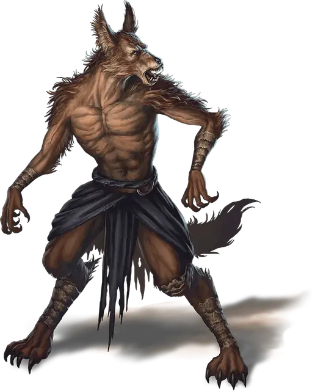

Шакальник
Jackalwere
Средний Гуманоид (Перевертыш), хаотично-злой

Класс Доспеха 12
Хиты 18 (4к8)
Скорость 40 футов
| мод | спас | ||
|---|---|---|---|
| СИЛ | 11 | +0 | +0 |
| ЛОВ | 15 | +2 | +2 |
| ТЕЛ | 11 | +0 | +0 |
| мод | спас | ||
|---|---|---|---|
| ИНТ | 13 | +1 | +1 |
| МДР | 11 | +0 | +0 |
| ХАР | 10 | +0 | +0 |
Навыки Восприятие +2, Обман +4, Скрытность +4
Иммунитет к урону дробящий, колющий, рубящий от немагических атак, кроме нанесённых посеребрённым оружием
Чувства пассивное Восприятие 12
Языки Общий
Опасность 1/2 (100 опыта)
Бонус мастерства +2
Среда обитания Луг, Арктика
Особенности
Языки. - не может говорить в форме шакала.
Перевертыш. Шакальник может действием превратиться в конкретного человека Среднего размера или в гибрид шакала и гуманоида, или же принять свой истинный облик (шакал Маленького размера). За исключением размера во всех обликах его характеристики остаются теми же самыми. Все несомое и носимое им снаряжение не превращается. Он принимает свой истинный облик, если умирает.
Острый слух и тонкий нюх. Шакальник совершает с преимуществом проверки Мудрости (Восприятие), полагающиеся на слух и обоняние.
Тактика стаи. Шакальник совершает с преимуществом броски атаки по существу, если в пределах 5 футов от этого существа находится как минимум один дееспособный союзник шакальника.
Действия
Укус (только в облике шакала или гибридном облике). Рукопашная атака оружием: +4 к попаданию, досягаемость 5 футов, одна цель. Попадание: Колющий урон 4 (1к4 + 2).
Скимитар (только в облике человека или гибридном облике). Рукопашная атака оружием: +4 к попаданию, досягаемость 5 футов, одна цель. Попадание: Рубящий урон 5 (1к6 + 2).
Усыпляющий взгляд. Шакальник пристально смотрит на одно существо, видимое в пределах 30 футов. Цель должна совершить спасбросок Мудрости Сл 10. При провале цель впадает в магическую дрему и теряет сознание на 10 минут, или пока кто-нибудь не разбудит её действием. Успешно спасшееся от этого эффекта существо получает иммунитет к взгляду этого шакальника на следующие 24 часа. Нежить и существа, обладающие иммунитетом к очарованию, не попадают под его действие.
Описание
Шакальники — обыкновенные шакалы, испорченные демоническими силами — рыщут по дорогам и тропам, подстерегая и убивая всех встречных.
У шакальников три физических облика, которые они могут принимать. В своем истинном облике его невозможно отличить от обычного шакала. Он может принять облик человека, часто представая в виде тощего и жалкого попрошайки. Когда же путники приглашают его к себе, чудовище принимает облик гибрида человеческих размеров, с шерстью и головой шакала, ходящего на двух ногах, и набрасывается на них.
Обманщики и трусы. Демонический повелитель Граз’зт создал шакальников, чтобы те служили его верным слугам — ламиям. Он одарил шакалов даром речи и способностью принимать человеческие облики. Шакальники рождены, чтобы лгать, и наблюдательные персонажи могут заметить, как он кривится от боли, когда говорит правду.
Шакальники предпочитают драться в сопровождении шакалов и собратьев. Под руководством шакальников шакалы становятся свирепыми и преданными спутниками.
Сверхъестественные слуги. Шакальники похищают гуманоидов для своих хозяев ламий, обрекая жертв на пожизненное рабство или мучительную смерть. Магический взгляд шакальника лишает противника сознания, позволяя чудовищу вязать существо и тащить его прочь. Шакальник может также использовать свой взгляд, чтобы вывести из строя смертельно опасного врага и дать себе время сбежать.